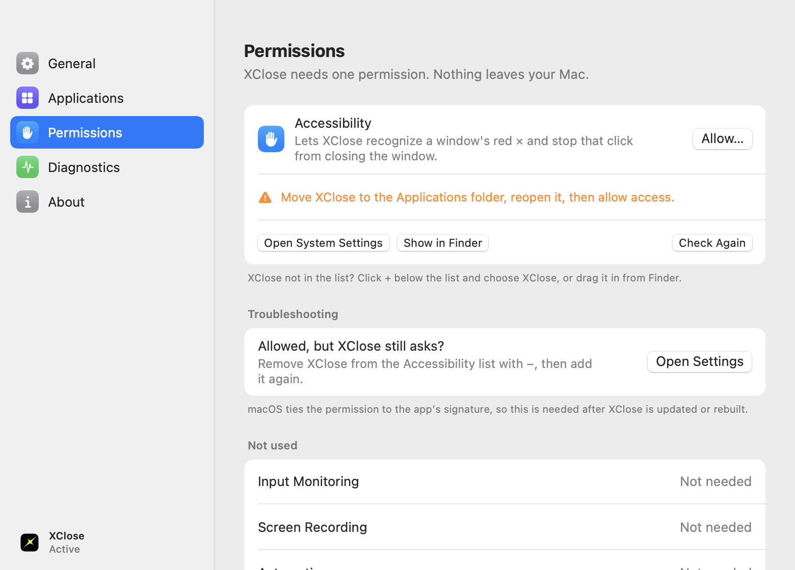

Close the window. Quit the app.
On a Mac, the red button only closes a window and the app keeps running. XClose makes it quit the app, the same as ⌘Q.
Your changes will be lost if you don't save them.
Try it yourself: click the red button in the demo, or hold ⌥ while you click.Tap the red button in the demo to try it.
One button, done right.
XClose changes exactly one thing and is careful about everything around it: your work, your other windows, and your Mac's resources.
Quits the whole app
Every window closes, including ones in the background. It sends the same request as ⌘Q to the app you clicked.
Option-click to just close
Hold ⌥ for the classic behavior. Minimize, full screen and ⌘W work exactly as before.
Never loses your work
Apps still ask to save, and Cancel keeps them open. XClose never force-quits or clicks dialogs for you.
Feels instant
Windows disappear the moment you click while the app shuts down in the background. It comes back if it needs you.
Exclude any app
Keep the old behavior where you want it. Finder and system components are always left alone.
Light and private
No account and no analytics, and about 0% CPU at rest. The only network use is an optional daily update check.
Feels like part of macOS.
XClose sits in your menu bar. Pause it in one click, choose which apps it applies to, and check exactly what it did in Diagnostics.




Set up in a minute.
After the first install, XClose keeps itself up to date.
Download and drag
Open XClose.dmg and drag XClose into your Applications folder.
Open it once
macOS asks you to confirm an app from the internet. Go to System Settings › Privacy & Security and click Open Anyway.
Allow Accessibility
XClose walks you through turning it on. It's the only permission it needs.
XClose isn't notarized by Apple yet, which requires a paid developer membership. It's open source, and every release is built publicly on GitHub. If you prefer Terminal, this clears the download flag after you've moved XClose to Applications:
xattr -dr com.apple.quarantine /Applications/XClose.appSmall by design.
A native Swift app built on public macOS APIs. No code injection, no kernel extensions, nothing running in the background beyond the app itself.
- Download
- 2.8 MB
- Requires
- macOS 13 Ventura+
- Architecture
- Universal
- CPU at rest
- ≈ 0%
- Permissions
- Accessibility only
- Network
- Optional update check
- Updates
- Signed, automatic
- Price
- Free
- License
- MIT
Good questions.
No. XClose sends the same quit request as ⌘Q. Apps show their usual "Save changes?" prompt, and if you click Cancel the app keeps running.
Apps that use standard macOS window controls: those built with AppKit, SwiftUI and Catalyst, Electron apps such as VS Code and Slack, Chromium browsers, and Java apps. Apps that draw their own window buttons keep their normal behavior, and panels, dialogs and sheets just close as before.
To recognize a window's real close button under your click, and to stop that click from only closing the window. XClose looks only at the button you click in a title bar. It never reads window contents, titles or keystrokes.
No. There's no account and no analytics. With automatic updates on, XClose fetches a small update feed from this site once a day. No personal information is sent, and you can turn it off in Settings.
Click the XClose icon in the menu bar to pause or quit, and the normal red button behavior returns immediately. To uninstall, quit XClose and drag it from Applications to the Trash.